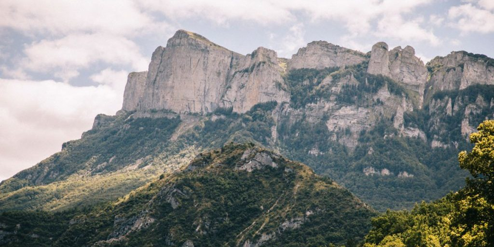

Les Trois Becs, la montagne qui veille sur le sud de la Drôme
Il y a des silhouettes qu'on reconnaîtrait les yeux fermés. Cette longue crête calcaire qui se découpe au-dessus de la forêt de Saoû, avec ses trois pointes bien distinctes, en fait partie. Ici, tout le monde les appelle simplement "les Trois Becs". Pas étonnant qu'on ait eu envie d'en faire un sweat.
Trois sommets, une seule crête
Le Veyou, le Signal et Roche Courbe : voilà les trois "becs" qui donnent son nom au massif. Le Veyou culmine à 1 589 mètres, c'est le plus haut des trois, suivi du Signal à 1 559 mètres puis de Roche Courbe à 1 545 mètres. Ensemble, ils forment un synclinal, un pli rocheux dont les deux flancs plongent de chaque côté de la crête. Vu de la vallée, ça donne cette ligne de sommets si reconnaissable, qui domine le paysage sur des kilomètres à la ronde.
La forêt de Saoû, un cirque grandeur nature
Aux pieds des Trois Becs commence la forêt de Saoû, l'une des plus belles forêts de la Drôme, encerclée par une véritable muraille de calcaire sur près de 2 500 hectares. C'est un des plus grands cirques naturels d'Europe, et on comprend vite pourquoi en s'y promenant : les falaises montent de tous les côtés, comme pour protéger la forêt du reste du monde. Un sacré terrain de jeu pour qui aime marcher.
Une randonnée qu'on fait, ou qu'on rêve de faire, au moins une fois
Le circuit classique démarre au col de la Chaudière, grimpe à travers la forêt jusqu'au Pré de l'Âne, puis attaque l'ascension du Veyou, le plus costaud des trois sommets. On enchaîne ensuite sur la crête, en passant par le Signal puis Roche Courbe, avec le vide qui s'ouvre de chaque côté et l'impression d'avoir les deux pieds posés à l'intérieur même du synclinal. Sur le chemin du retour, on croise le Rocher de la Laveuse, un bloc percé d'un trou qui offre un dernier point de vue sur la vallée de Crest avant de redescendre.
Une crête qui monte, des sommets qui se suivent, et la vallée de la Drôme qui s'étale en dessous : ça aussi, c'est ça le bon vivre.

De la montagne au sweat : notre clin d'œil hivernal
C'est cette crête qu'on a voulu porter sur le dos quand le froid arrive, avec notre sweat Trois Becs. Sur le devant, un petit logo "Bon Vivre Aux Trois Becs" ; au dos, une scène de raclette entre copains, avec la tagline qui va bien : "En montagne, on ne compte pas les parts de raclette !" Taillé en 85 % coton biologique peigné et 15 % polyester recyclé post-consommation, il se glisse dans le sac pour la randonnée comme dans le canapé pour les soirées qui refroidissent.
Ce nom de Trois Becs, on le retrouve aussi du côté d'Upie, chez les copains de l'AS 3 Becs, qui portent fièrement les couleurs du massif sur les terrains de foot de la Drôme.
Que vous partiez crapahuter jusqu'au Veyou ou que vous préfériez admirer la crête depuis la terrasse, un verre à la main, le sweat Trois Becs a été pensé pour vous suivre. Retrouvez-le avec le reste de la collection Sweats & Vestes, ou allez le voir directement sur notre boutique en ligne, à découvrir ici ↗.